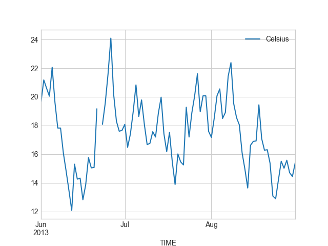
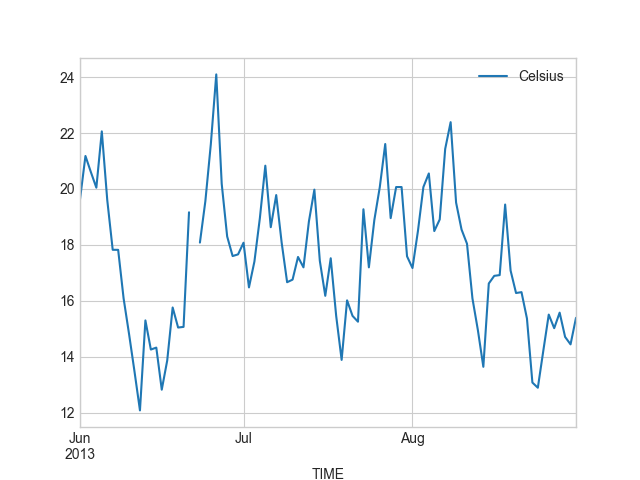

Advanced plotting with Pandas¶
At this point you should know the basics of making plots with Matplotlib module. It is also possible to do Matplotlib plots directly from Pandas because many of the basic functionalities of Matplotlib are integrated into Pandas. In this part, we will show how to visualize data using Pandas and create plots such as this:

Downloading the data and preparing¶
For our second lesson plotting data using Pandas we will use hourly weather data from Helsinki. Download the weather data file from here.
- Save a copy of this file in your home directory or a directory for the materials for this week’s lesson.
- The data file contains observed hourly temperatures, windspeeds, etc. covering years 2012 and 2013. Observations were recorded from the Malmi airport weather station in Helsinki. It is derived from a data file of daily temperature measurments downloaded from the US National Oceanographic and Atmospheric Administration’s National Centers for Environmental Information climate database.
- There should be around 16.5 thousand rows in the data.
The first rows of the data looks like following:
USAF WBAN YR--MODAHRMN DIR SPD GUS CLG SKC L M H VSB MW MW MW MW AW AW AW AW W TEMP DEWP SLP ALT STP MAX MIN PCP01 PCP06 PCP24 PCPXX SD
029750 99999 201201010050 280 3 *** 89 BKN * * * 7.0 ** ** ** ** ** ** ** ** * 28 25 ****** 29.74 ****** *** *** ***** ***** ***** ***** **
029750 99999 201201010150 310 3 *** 89 OVC * * * 7.0 ** ** ** ** ** ** ** ** * 27 25 ****** 29.77 ****** *** *** ***** ***** ***** ***** **
029750 99999 201201010250 280 1 *** *** *** * * * 6.2 ** ** ** ** ** ** ** ** * 25 21 ****** 29.77 ****** *** *** ***** ***** ***** ***** **
029750 99999 201201010350 200 1 *** *** *** * * * 6.2 ** ** ** ** ** ** ** ** * 21 21 ****** 29.80 ****** *** *** ***** ***** ***** ***** **
Parsing datetime when reading data¶
One of the most useful and powerful features in Pandas is its ability to work with time data. In Pandas, we can even read the data from a file and tell to Pandas that values from certain column should be interpreted as time, and we can actually use that as our index, which is cool! You will see later why.
Let’s start by importing some modules that will be useful when plotting.
In [1]: import pandas as pd
In [2]: import matplotlib.pyplot as plt
In [3]: from datetime import datetime
In [4]: import numpy as np
Next, let’s read the data into Pandas and determine that the values from YR--MODAHRMN column should be interpreted and converted into a time index.
In [5]: fp = "1924927457196dat.txt"
When reading the data we can use parse_dates parameter to parse the time information
In [5]: data = pd.read_csv(fp, sep='\s+', parse_dates=['YR--MODAHRMN'], na_values=['*', '**', '***', '****', '*****', '******'])
Let’s check the datatypes of our columns.
In [6]: data.dtypes
Out[6]:
USAF int64
WBAN int64
YR--MODAHRMN datetime64[ns]
DIR float64
SPD int64
GUS float64
CLG float64
SKC object
L float64
M float64
H float64
VSB float64
MW float64
MW.1 float64
MW.2 float64
MW.3 float64
AW float64
AW.1 float64
AW.2 float64
AW.3 float64
W float64
TEMP float64
DEWP float64
SLP float64
ALT float64
STP float64
MAX float64
MIN float64
PCP01 float64
PCP06 float64
PCP24 float64
PCPXX float64
SD float64
dtype: object
As we can see the data type of YR--MODAHRMN column (third from above) is of type datetime64[ns].
This means that the values on that column are interpreted as time objects.
Let’s see how our data look like.
In [7]: data.head()
Out[7]:
USAF WBAN YR--MODAHRMN DIR SPD GUS CLG SKC L M ... \
0 29750 99999 2012-01-01 00:50:00 280.0 3 NaN 89.0 BKN NaN NaN ...
1 29750 99999 2012-01-01 01:50:00 310.0 3 NaN 89.0 OVC NaN NaN ...
2 29750 99999 2012-01-01 02:50:00 280.0 1 NaN NaN NaN NaN NaN ...
3 29750 99999 2012-01-01 03:50:00 200.0 1 NaN NaN NaN NaN NaN ...
4 29750 99999 2012-01-01 04:50:00 NaN 0 NaN NaN NaN NaN NaN ...
SLP ALT STP MAX MIN PCP01 PCP06 PCP24 PCPXX SD
0 NaN 29.74 NaN NaN NaN NaN NaN NaN NaN NaN
1 NaN 29.77 NaN NaN NaN NaN NaN NaN NaN NaN
2 NaN 29.77 NaN NaN NaN NaN NaN NaN NaN NaN
3 NaN 29.80 NaN NaN NaN NaN NaN NaN NaN NaN
4 NaN 29.80 NaN NaN NaN NaN NaN NaN NaN NaN
[5 rows x 33 columns]
As we can see the values on YR--MODAHRMN indeed look like time information where the first part represents the date (yyyy-mm-dd) and the second part represents the hours:minutes:seconds.
Before continue with plotting in Pandas, let’s process our data a bit by selecting only few columns, renaming them and converting the Fahrenheit temperatures into Celsius. If you don’t remember how the following steps work, you might want to take another look on Lesson 6 materials.
# Select data
selected_cols = ['YR--MODAHRMN', 'TEMP', 'SPD']
data = data[selected_cols]
# Rename columns
name_conversion = {'YR--MODAHRMN': 'TIME', 'SPD': 'SPEED'}
data = data.rename(columns=name_conversion)
# Convert Fahrenheit temperature into Celsius
data['Celsius'] = (data['TEMP'] - 32) / 1.8
Let’s confirm that everything looks correct.
In [8]: data.head()
Out[8]:
TIME TEMP SPEED Celsius
0 2012-01-01 00:50:00 28.0 3 -2.222222
1 2012-01-01 01:50:00 27.0 3 -2.777778
2 2012-01-01 02:50:00 25.0 1 -3.888889
3 2012-01-01 03:50:00 21.0 1 -6.111111
4 2012-01-01 04:50:00 21.0 0 -6.111111
Okey, great now our data looks better, and we can continue. Let’s see how our data looks like by plotting the Celsius temperatures.
Basic line plot in Pandas¶
In Pandas, it is extremely easy to plot data from your DataFrame. You can do this by using plot() function.
Let’s plot all the Celsius temperatures (y-axis) against the time (x-axis). You can specify the columns that you want to plot
with x and y parameters:
In [9]: data.plot(x='TIME', y='Celsius');

Cool, it was this easy to produce a line plot that can be used to understand our data better. We can clearly see that there is quite a lot of variation in the temperatures, and different seasons pop up quite clearly from the data.
Selecting data based on time in Pandas¶
What is obvious from the figure above, is that the hourly level data is actually slightly too accurate for plotting data covering two full years. Let’s see a trick, how we can really easily aggregate the data using Pandas.
First we need to set the TIME as the index of our DataFrame. We can do this by using set_index() parameter.
In [10]: data = data.set_index('TIME')
In [11]: data.head()
Out[11]:
TEMP SPEED Celsius
TIME
2012-01-01 00:50:00 28.0 3 -2.222222
2012-01-01 01:50:00 27.0 3 -2.777778
2012-01-01 02:50:00 25.0 1 -3.888889
2012-01-01 03:50:00 21.0 1 -6.111111
2012-01-01 04:50:00 21.0 0 -6.111111
As we can see now the index of our data is not a sequential number from 0 up to 16569, but a datetime index that represents time.
What is cool about this thing is that you can really easily e.g. select data from a single day using basic Pandas indexing.
Let’s select data from first day of January in 2013 to demonstrate. We can slice the data by inserting the start date and end date that we want to include in our dataset.
In [12]: first_jan = data['2013-01-01': '2013-01-01']
In [13]: first_jan
Out[13]:
TEMP SPEED Celsius
TIME
2013-01-01 00:50:00 34.0 13 1.111111
2013-01-01 01:50:00 36.0 10 2.222222
2013-01-01 02:50:00 36.0 10 2.222222
2013-01-01 03:50:00 37.0 11 2.777778
2013-01-01 04:50:00 37.0 13 2.777778
2013-01-01 05:50:00 37.0 13 2.777778
2013-01-01 06:50:00 37.0 11 2.777778
2013-01-01 07:50:00 37.0 13 2.777778
2013-01-01 08:50:00 37.0 11 2.777778
2013-01-01 09:50:00 37.0 13 2.777778
2013-01-01 10:50:00 37.0 15 2.777778
2013-01-01 11:50:00 37.0 16 2.777778
2013-01-01 12:50:00 37.0 16 2.777778
2013-01-01 13:50:00 37.0 14 2.777778
2013-01-01 14:50:00 37.0 11 2.777778
2013-01-01 15:50:00 37.0 10 2.777778
2013-01-01 16:50:00 37.0 11 2.777778
2013-01-01 17:50:00 37.0 10 2.777778
2013-01-01 18:50:00 37.0 10 2.777778
2013-01-01 19:50:00 37.0 10 2.777778
2013-01-01 20:50:00 37.0 10 2.777778
2013-01-01 21:50:00 36.0 11 2.222222
2013-01-01 22:50:00 36.0 9 2.222222
2013-01-01 23:50:00 36.0 8 2.222222
Cool! This is quite much easier to do than when parsing the date information using string manipulation (as we did on Lesson 6). In a similar manner you can also specify more accurately the time that you want to select. Let’s now select only first 12 hours of the same day
In [14]: first_jan_12h = data['2013-01-01 00:00': '2013-01-01 12:00']
In [15]: first_jan_12h
Out[15]:
TEMP SPEED Celsius
TIME
2013-01-01 00:50:00 34.0 13 1.111111
2013-01-01 01:50:00 36.0 10 2.222222
2013-01-01 02:50:00 36.0 10 2.222222
2013-01-01 03:50:00 37.0 11 2.777778
2013-01-01 04:50:00 37.0 13 2.777778
2013-01-01 05:50:00 37.0 13 2.777778
2013-01-01 06:50:00 37.0 11 2.777778
2013-01-01 07:50:00 37.0 13 2.777778
2013-01-01 08:50:00 37.0 11 2.777778
2013-01-01 09:50:00 37.0 13 2.777778
2013-01-01 10:50:00 37.0 15 2.777778
2013-01-01 11:50:00 37.0 16 2.777778
Great. As we can see it is really easy to select data based on times as well.
Aggregating data with resample() and datetime index¶
Let’s now continue with our original problem which was to aggregate the data into daily observations.
We can do this easily by using a resample() function that does the aggregation for us by utilizing our datetime index.
We can specify the rule how we aggregate the data. In below, we use 'D' to specify that we want to aggregate our data based on Daily averages.
The last function in following command basically determines that we want to calculate the mean from our data values.
In [16]: daily = data.resample(rule='D').mean()
In [17]: daily.head()
Out[17]:
TEMP SPEED Celsius
TIME
2012-01-01 25.250000 3.791667 -3.750000
2012-01-02 33.130435 14.739130 0.628019
2012-01-03 37.333333 6.333333 2.962963
2012-01-04 37.041667 16.041667 2.800926
2012-01-05 36.583333 8.541667 2.546296
Awesome, now we have values on a daily level that we were able to aggregate with one simple command. Of course it is also possible to aggregate
based on multiple different time intervals such as hours (H), weeks (W) months (M), etc. See all possible aggregation types (=*offset aliases*) from Pandas documentation
Let’s now plot our daily temperatures in a similar manner as earlier. Note, that now our time is the index of our DataFrame, so we can pass that into our plotting function. Let’s also change the width and the color of our line to red).
The kind parameter can be used to specify what kind of plot you want to visualize. There many different ones available in Pandas, however,
we will now only use basic line plots in this tutorial. See many different kind of plots from official Pandas documentation about visualization.
In [18]: daily.plot(x=daily.index, y='Celsius', kind='line', lw=0.75, c='r');
{kind=link}
Now we can see that our plot does not look so “crowded” as we have only daily observations instead of hourly. What we can also see is that Pandas actually formats now the x-axis tick-labels really nicely (showing month names and years below them) because we are using the datetime-index to plot the data.
We can also save this figure to disk by using plt.savefig() function. With dpi parameter it is possible to specify the resolution of the Figure.
In [19]: plt.savefig("temp_plot1.png", dpi=300)
Note
In previous lesson, we did this by using string manipulation and grouping the data that are really useful skills, but the technique showed here, is much more convenient way of producing the same result.
Making subplots¶
Let’s continue working with the weather data and learn how to do subplots, i.e. such Figures where you have multiple plots in different panels as was shown in the beginning.
Let’s start by changing our plotting style into a nicely looking seaborn-whitegrid.
You can take a look of different readily-available styles from here .
In [20]: plt.style.use('seaborn-whitegrid')
Let’s first divide our data into different seasons: Winter (December-February), Spring (March-May), Summer (June-August), and Fall (Septempber-November).
We can do this really easily by selecting data based on the datetime index that we learned earlier.
In [21]: winter = daily['2012-12-01': '2013-02-28']
In [22]: spring = daily['2013-03-01': '2013-05-31']
In [23]: summer = daily['2013-06-01': '2013-08-31']
In [24]: fall = daily['2013-09-01': '2013-11-30']
Let’s check what we have e.g. in winter DataFrame now.
In [25]: winter.head()
Out[25]:
TEMP SPEED Celsius
TIME
2012-12-01 15.500000 6.083333 -9.166667
2012-12-02 10.041667 3.416667 -12.199074
2012-12-03 11.125000 3.791667 -11.597222
2012-12-04 12.875000 5.750000 -10.625000
2012-12-05 11.083333 3.791667 -11.620370
We can plot them separately first, just to see how they look.
In [26]: winter.plot(winter.index, 'Celsius');
In [27]: spring.plot(spring.index, 'Celsius');
In [28]: summer.plot(summer.index, 'Celsius');
In [29]: fall.plot(fall.index, 'Celsius');
{kind=link}
 

{kind=link}

Okey, so from these plots we can already see that the temperatures in different seasons are quite different, which is quite obvious of course. It is important to notice that the scale of the y-axis changes in these different plots. If we would like to compare different seasons to each other we need to make sure that the temperature scale is similar with all different seasons.
We want to have our y-axis limits so that the upper limit is the maximum temperature + 5 degrees in our data (full year), and the lowest is the minimum temperature - 5 degrees, accordingly.
In [30]: min_temp = daily['Celsius'].min() - 5
In [31]: max_temp = daily['Celsius'].max() + 5
In [32]: print("Min:", min_temp, "Max:", max_temp)
Min: -25.6481481481 Max: 29.0972222222
Okey so we can see that the minimum temperature in our data is approximately -21 degrees and the maximum is +24 degrees. We can now use those values to standardize the y-axis scale of our plot.
Let’s now continue and see how we can plot all these graphs different into the same Figure.
We can create a 2x2 panel for our visualization using matplotlib’s subplots() function where we specify how many rows and columns we want to have in our Figure.
We can also specify the size of our figure with figsize() parameter that takes the width and height values (in inches) as input.’
In [33]: fig, axes = plt.subplots(nrows=2, ncols=2, figsize=(12,8))
In [34]: axes
Out[34]:
array([[<matplotlib.axes._subplots.AxesSubplot object at 0x000001DE0F432DD8>,
<matplotlib.axes._subplots.AxesSubplot object at 0x000001DE10023668>],
[<matplotlib.axes._subplots.AxesSubplot object at 0x000001DE10075BE0>,
<matplotlib.axes._subplots.AxesSubplot object at 0x000001DE100DD5F8>]], dtype=object)
We can see that as a result we have now a list containing two nested lists where the first one contains the axis for column 1 and 2 on row 1 and the second list contains the axis for columns 1 and 2 for row 2. We can parse these axes into own variables so it is easier to work with them.’
In [35]: ax11 = axes[0][0]
In [36]: ax12 = axes[0][1]
In [37]: ax21 = axes[1][0]
In [38]: ax22 = axes[1][1]
Now we have four different axis variables for different panels in our Figure.
Next we can use them to plot the seasonal data into them.
Let’s first plot the seasons and give different colors for the lines, and specify the y-scale limits to be the same with all subplots.
With parameter c it is possible to specify the color of the line. You can find an extensive list of possible colors and RGB-color codes
from this link. With lw parameter you can specify the width of the line.
In [39]: line_width = 2.5
In [40]: winter.plot(x=winter.index, y='Celsius', ax=ax11, c='blue', legend=False, lw=line_width, ylim=(min_temp, max_temp));
In [41]: spring.plot(x=spring.index, y='Celsius', ax=ax12, c='orange', legend=False, lw=line_width, ylim=(min_temp, max_temp));
In [42]: summer.plot(x=summer.index, y='Celsius', ax=ax21, c='green', legend=False, lw=line_width, ylim=(min_temp, max_temp));
In [43]: fall.plot(x=fall.index, y='Celsius', ax=ax22, c='brown', legend=False, lw=line_width, ylim=(min_temp, max_temp));

Great, now we have all the plots in same Figure! However, we can see that there are some problems with our x-axis as the number of ticks is different in different subplots.
We can change that. It is basically possible to adjust all elements of your visualization. Quite many of them can be adjusted
by referring to the axis object and modifying different parameters from there.
The following parts where we adjust the asthetics of the subplots might be a bit difficult to understand, but don’t worry if you don’t understand everything. With other data types of data (other than time data) modifying e.g. the tick intervals is much easier.
Let’s first clean all the x-axis ticks. We can do that by going through all the axis and setting an empty list as ticks.
At the same time we can specify that the y-ticks should be visible every 5 degree intervals. For this purpose, we can take advantage of arange() function from numpy module. We can also set the size of our ticklabels larger at this point.
In [44]: yticks = np.arange(start=-25, stop=31, step=5)
for ax in [ax11, ax12, ax21, ax22]:
# Clear x axis ticks
ax.get_xaxis().set_ticks([])
# Specifu y-axis ticks
ax.yaxis.set_ticks(yticks)
# Specify major tick-label sizes larger
ax.tick_params(axis='both', which='major', labelsize=12)
Let’s specify that we want to have daily ticks for all our plots. This can be done by utilizing a specific functionality from matplotlib called dates that we can use to specify the ticks.
This part is quite advanced plotting, so again, do not worry if you don’t understand everything.
from matplotlib import dates
# Iterate over all four axes that we have and apply same procedures to each one of them
for ax in [ax11, ax12, ax21, ax22]:
# Set minor ticks with day numbers
ax.xaxis.set_minor_locator(dates.DayLocator(interval=7))
ax.xaxis.set_minor_formatter(dates.DateFormatter('%d'))
# Set major ticks with month names
ax.xaxis.set_major_locator(dates.MonthLocator())
ax.xaxis.set_major_formatter(dates.DateFormatter('\n%b'))

Perfect now we have similar scales for all of our subplots.
As a last step let’s add text on top of the plots to specify the seasons. Adding text on top of your plot
can be done easily with text() function. When using the text() function you need to specify (at least)
the x-position, y-position and the text which will be added to the plot.
Let’s specify the location for the Winter, Spring, Summer and Fall annotations.
In here, we can use the same y-position for all of our plots. However, with x-position we need to specify the position as
datetime() objects because the x-axis includes datetime values.
In [45]: all_y = -23
In [46]: wint_x = datetime(2013, 2, 10)
In [47]: spr_x = datetime(2013, 5, 10)
In [48]: sum_x = datetime(2013, 8, 7)
In [49]: fal_x = datetime(2013, 11, 18)
Let’s add those texts on top of our subplots.
In [50]: ax11.text(wint_x, all_y, 'Winter', size=16);
In [51]: ax12.text(spr_x, all_y, 'Spring', size=16);
In [52]: ax21.text(sum_x, all_y, 'Summer', size=16);
In [53]: ax22.text(fal_x, all_y, 'Fall', size=16);
Let’s add a common Y-label for the figure and a title, this can be done by adding another subplot that covers the area of the whole Figure and adding labels on top of that.
In [54]: fig.add_subplot(111, frameon=False);
Let’s make sure that there are no ticks or labels added
In [55]: plt.grid('off')
In [56]: plt.tick_params(labelcolor='none', top='off', bottom='off', left='off', right='off')
Let’s now add common y-label and a title for our plot.
In [57]: plt.ylabel("Temperature in Celsius", size=22, family='Arial');
In [58]: plt.title("Seasonal variations in temperature", size=22, family='Arial');
By calling plt.tightlayout() it is possible to remove most of the extra whitespace around your figure.
In [59]: plt.tight_layout()
Finally, we can save our subplot to disk in a similar manner as before.
In [60]: plt.savefig("Temperature_seasons_subplot.png", dpi=300)
And voilá! Now we have a fairly nice looking figure with four subplots. Now you know few really useful tricks how to manipulate the aesthetics of your plot, and how to create subplots which is really useful skill to learn! Now it is time to be creative and practice your visualization skills with an exercise.